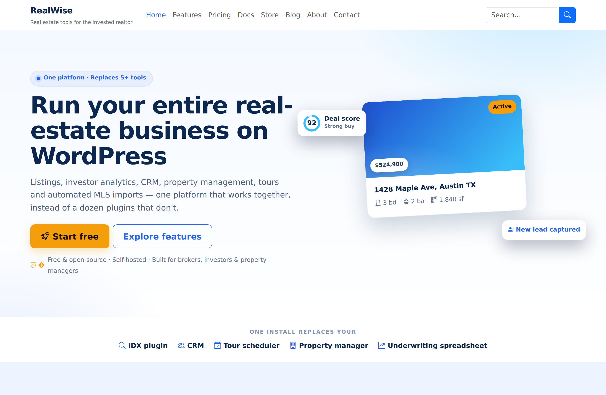
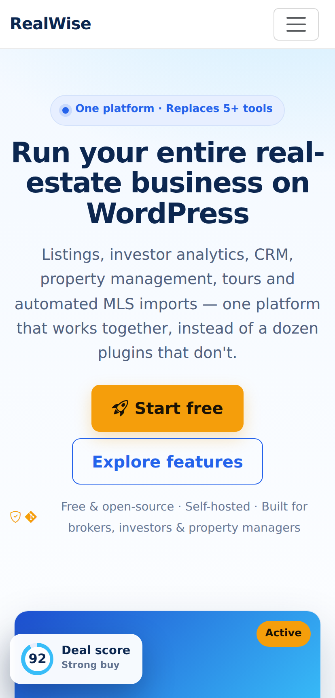
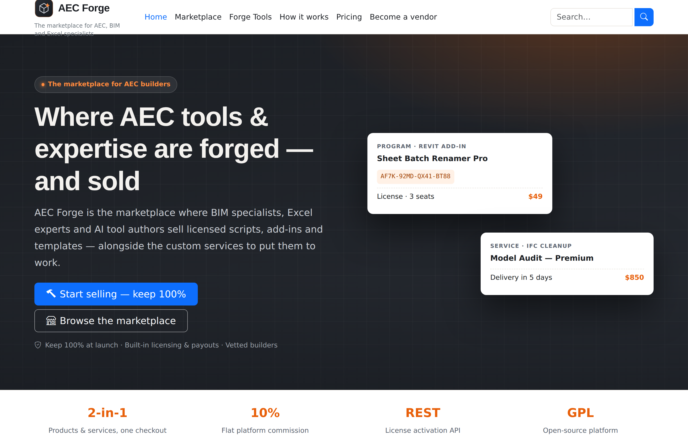
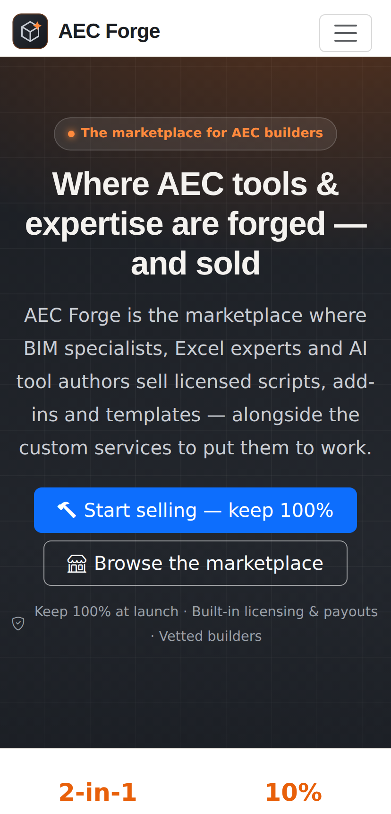

Child themes
Both child themes keep WPWiseBones as the parent and add a brand stylesheet, a self-contained marketing front page and a one-click builder that creates the rest of the site.
How the skins work
Each child theme is deliberately thin: a style.css header pointing at
Template: wpwisebones, a functions.php that enqueues one brand stylesheet after
the parent's, and a front-page.php that renders the marketing page with the parent's
get_header() and get_footer(). The brand colours are CSS custom properties
overriding Bootstrap's, so nothing in the parent has to be forked.
The parent handles the stylesheet order for you: Bootstrap, then the parent
style.css and main.css, then the child's style.css — the child
theme only has to enqueue its own brand CSS (both of these do, at priority 20). This needs theme
1.0.13 or newer; earlier versions left the parent style.css out on a child theme site.
RealWise
Version 1.3.4 · text domain realwise · navy, royal blue and amber.

realwise/front-page.php with the parent header and footer.
See the whole page.{kind=link}
The marketing page is self-contained — it needs neither the importer nor the shortcodes plugin — and covers a feature grid, workflow scenarios, pricing pillars and an FAQ. Easy Digital Downloads buy buttons appear automatically once the storefront exists.
Install
- Install and activate the WPWiseBones parent theme.
- Install and activate RealWise.
- Optionally add WiseBones Shortcodes (for
[wpb_*]blocks on the inner pages) and Easy Digital Downloads — plus EDD Software Licensing if you want license keys.
The demo importer
The importer runs automatically on first activation, and can be re-run from Appearance → RealWise Demo → Import. It is idempotent: pages and downloads are matched by a meta flag and updated in place rather than duplicated. It creates:
- Pages — Home, Features, Pricing, Docs, About, Contact on the RealWise Marketing full-bleed template, plus a Blog posts page and a sample post.
- Reading settings — Home as the static front page, Blog as the posts page.
- Menus — RealWise Primary and RealWise Footer, assigned to their theme locations.
- Theme mods — hero heading, sub-heading and a CTA pointing at Pricing.
- An EDD storefront when EDD is active — a free RealWise download and a paid RealWise MLS, with the bundled plugin zips copied into a protected uploads folder and attached.
The child theme also registers a [realwise_contact_form] shortcode and its own
Schema.org output for the marketing pages.

AEC Forge
Version 1.1.2 · text domain aec-forge · charcoal and molten orange.

aec-forge/front-page.php.
See the whole page.{kind=link}
AEC Forge promotes a multi-vendor marketplace where AEC/BIM specialists, Excel experts and AI tool authors sell licensed digital products and tiered services. The front page reads live data from the AEC Market and AEC Forge Tools plugins when they are active — the tool list, credit costs, featured vendors and product cards — and falls back to a representative static list when they are not, so the page always renders.
Install
- Install and activate WPWiseBones, then AEC Forge.
- Run Appearance → AEC Forge Setup → Build to create the promo pages (Home, How It Works, The Concept) and the menus.
- Add the AEC Market plugin for the live marketplace; WooCommerce product markup is themed through
woocommerce/content-product.php.

Rolling your own skin
Copy either child theme as a starting point. The pattern that keeps upgrades painless:
- Point
Template:atwpwisebonesinstyle.css. - Enqueue one brand stylesheet on
wp_enqueue_scriptsat a later priority than the parent's, and override Bootstrap's CSS custom properties (--bs-primaryand friends) rather than restyling components. - Version assets by
filemtime()— both child themes do this, so edits bust caches without a manual version bump. - Override single template parts from
template-parts/instead of whole templates.